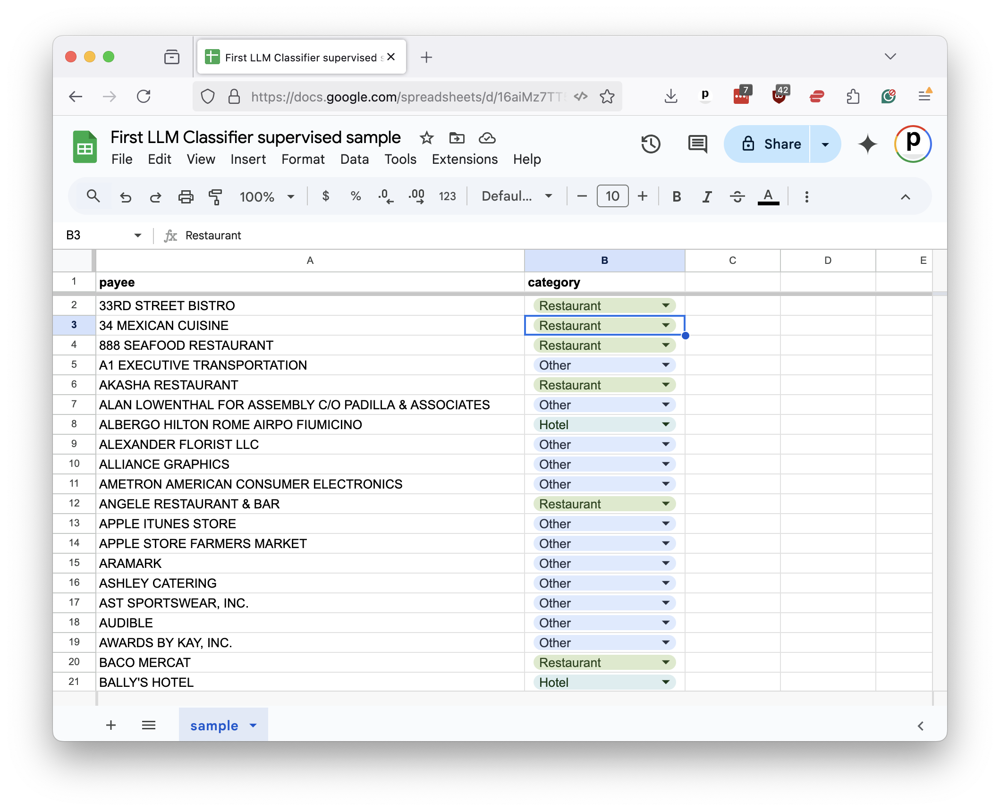
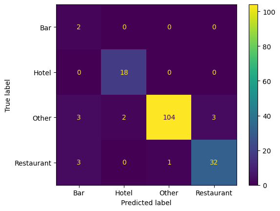
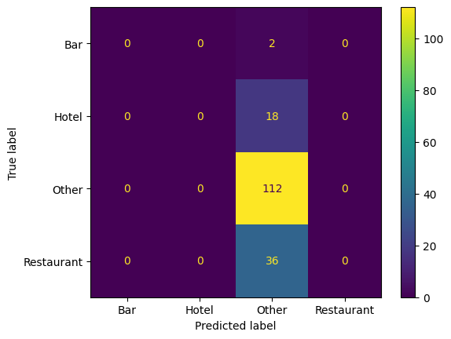

7. Evaluation¶
Before you publish anything, you’ll want to be sure you can trust the LLM’s classifications. Spot checks are not enough. You need a systematic way to evaluate your model’s performance.
This is where traditional machine-learning techniques still play a vital role. Let’s take a step back to learn how a longstanding technique known as supervision can evaluate an LLM prompt.
7.1. Lessons from the past¶
Before the advent of large-language models, machine-learning systems were created using a technique called supervised learning. This approach required users to provide carefully prepared data that showed the computer how to behave.
For instance, if you were developing a model to distinguish between spam emails and legitimate ones, you would provide the model with a set of emails that had already been properly classified as spam or not spam.
The model would then use that data to learn the relationships between the inputs and outputs, which it could apply to new emails it hadn’t seen before. This process is called training.
In systems like that, the supervised input is split into two separate sets: one for training the model and another held aside for testing its performance.
After the model is trained using the first set, it is evaluated using the second set. Since the testing set is withheld from the model during training, it provides a way to measure how well the model can generalize to data it hasn’t seen before. If the training was successful, the model should be able to correctly classify most of the instances in the test set.
Large-language models operate differently. They are trained on vast amounts of text and can generate responses based on various machine-learning approaches. The result is that you can use them without providing supervised data beforehand.
This is a significant advantage. However, it raises questions about how to evaluate the accuracy of an LLM prompt. Without a supervised sample to test its results, we can’t be sure if the model is performing well or just getting lucky with its guesses. Furthermore, without knowing where it gets things wrong, we don’t know what adjustments could improve its performance.
7.2. Creating a supervised sample¶
That’s why, even though LLMs don’t require supervised data to function, it’s still a good idea to create a supervised sample for evaluation purposes.
Start by outputting a random sample from the dataset you’re studying to a file of comma-separated values. In general, the larger the sample the better the evaluation, though at a certain point the returns diminish. For this exercise, let’s use pandas to create a sample of 250 records and export it to a file called sample.csv.
df.sample(250).to_csv("./sample.csv", index=False)
You would then open the file in a spreadsheet program like Excel or Google Sheets. For each payee in the sample, you would provide the correct category in a new companion column. As you fill it in with the correct answers, this gradually becomes your supervised sample. That’s all there is to it.

To speed the class along, we’ve already prepared a sample for you in the class repository. Create a new cell and read it into a DataFrame.
sample_df = pd.read_csv(
"https://raw.githubusercontent.com/palewire/first-llm-classifier/refs/heads/main/_notebooks/sample.csv"
)
Install the Python packages scikit-learn and matplotlib. Prior to LLMs, these libraries were the go-to tools for training and evaluating machine-learning models. We’ll primarily be using them for testing.
!uv add scikit-learn matplotlib
Add the train_test_split function from scikit-learn to your imports cell and rerun it. This tool is used to split a supervised sample into separate sets for training and testing.
from sklearn.model_selection import train_test_split
The first input is the DataFrame column containing the payee names. The second input is the DataFrame column containing the correct categories.
The test_size parameter determines the proportion of the sample that will be used for testing. In traditional machine-learning setups, a common split is 67% for training and 33% for testing. In our circumstance, where we’re not actually training a model, we will reverse the proportions and use 67% of the sample for testing to get a more robust evaluation of our LLM’s performance.
The random_state parameter ensures that the split is reproducible by setting a seed for the random number generator that draws the samples. This will ensure that you get the same training and testing sets each time you run the code, which is important for consistent evaluation.
training_input, test_input, training_output, test_output = train_test_split(
sample_df[["payee"]],
sample_df["category"],
test_size=0.67,
random_state=42, # Remember Jackie Robinson. Remember Douglas Adams.
)
7.3. Evaluating performance¶
In a traditional training setup, the next step would be to train a machine-learning model in sklearn using the training_input and training_output sets. The model would then be evaluated using the test_input and test_output sets.
With an LLM we skip ahead to the testing phase. We pass the test_input set to our LLM prompt and compare its guesses to the right answers found in the test_output set.
All that requires is that we pass the payee column from our test_input DataFrame to the function we created in the previous chapters.
llm_df = classify_batches(test_input.payee)
Next, we add the classification_report function from sklearn to our imports, which is used to evaluate a model’s performance.
from sklearn.metrics import classification_report
The classification_report function generates a report card on a model’s performance. You provide it with the correct answers in the test_output set and the model’s predictions in your prompt’s DataFrame. In this case, our LLM’s predictions are stored in the llm_df DataFrame’s category column.
print(classification_report(test_output, llm_df.category))
That will output a report that looks something like this:
precision recall f1-score support
Bar 0.25 1.00 0.40 2
Hotel 0.90 1.00 0.95 18
Other 0.99 0.93 0.96 112
Restaurant 0.91 0.89 0.90 36
accuracy 0.93 168
macro avg 0.76 0.95 0.80 168
weighted avg 0.96 0.93 0.94 168
At first, the report can be a bit overwhelming. What are all these technical terms? How do I read this damn thing? Let’s walk through it.
The precision column measures what statistics nerds call “positive predictive value.” It’s how often the model made the correct decision when it applied a category. For instance, in the “Bar” category here, the LLM has a precision of 0.25, which means only 25% of “Bar” predictions were correct.
An analogy here is a baseball player’s contact rate, which measures how often a batter connects with the ball when he swings his bat. In this case, our model swung at the “Bar” category eight times and only made contact twice.
The recall column measures how many of the supervised instances were correctly identified by the model. In this case, it shows that the LLM spotted 89% of the restaurants in our manual sample. The total number of restaurants in the sample is shown in the support column. So, out of 36 restaurants, the model correctly identified 32 of them.
It did even better with the two bars in the sample, correctly identifying both of them for a recall of 100%.
The f1-score is a combination of precision and recall. It’s a way to measure a model’s overall performance by balancing the two.
The averages at the bottom combine the results for all categories. The accuracy row shows how often the model got the right answer across all categories as a grand total. The macro row is a simple average of the precision, recall and f1-score for each category, which treats all categories equally regardless of how many instances they have in the sample. The weighted row is a mixed average based on the number of instances in each category.
In the example result above, the overall accuracy is about 93%, but the lower macro average of 80% shows the model is less consistent on rarer categories like bars.
Note
Due to the inherent randomness in the LLM’s predictions, it’s a good idea to test your sample and run these reports multiple times to get a sense of the model’s performance.
7.4. Visualizing the results¶
Another technique for evaluating classifiers is to visualize the results using a chart known as a confusion matrix. It shows how often the model correctly predicted each category and where it got things wrong.
The ConfusionMatrixDisplay tool from sklearn can draw one for us. We just need to update our sklearn.metrics import to include it.
from sklearn.metrics import ConfusionMatrixDisplay, classification_report
Then pass in the correct answers and the model’s predictions.
ConfusionMatrixDisplay.from_predictions(test_output, llm_df.category)

The diagonal line of cells running from the upper left to the lower right shows where the model correctly predicted the category. The off-diagonal cells show where it got things wrong. The color of the cells indicates how often the model made that prediction. For instance, we can see that four miscategorized restaurants in the sample were mistakenly predicted to be bars or filed under other.
7.5. The way we were¶
Before we look at how you might improve the LLM’s performance, let’s take a moment to compare the results of this evaluation against the old school approach where the supervised sample is used to train a machine-learning model that doesn’t have access to the ocean of knowledge poured into an LLM.
This will require importing a mess of sklearn functions and classes. We’ll use TfidfVectorizer to convert the payee text into a numerical representation that can be used by a LinearSVC classifier. We’ll then use a Pipeline to chain the two together. If you have no idea what any of that means, don’t worry. Now that we have LLMs in this world, you might never need to know.
Add these to your imports cell.
from sklearn.svm import LinearSVC
from sklearn.pipeline import Pipeline
from sklearn.compose import ColumnTransformer
from sklearn.feature_extraction.text import TfidfVectorizer
Here’s a simple example of how you might train and evaluate a traditional machine-learning model using the supervised sample.
First you setup all the machinery.
vectorizer = TfidfVectorizer(
sublinear_tf=True,
min_df=5,
norm="l2",
encoding="latin-1",
ngram_range=(1, 3),
)
preprocessor = ColumnTransformer(
transformers=[("payee", vectorizer, "payee")], sparse_threshold=0, remainder="drop"
)
pipeline = Pipeline(
[("preprocessor", preprocessor), ("classifier", LinearSVC(dual="auto"))]
)
Then you train the model using those training sets we split out at the start.
model = pipeline.fit(training_input, training_output)
And you ask the model to use its training to predict the right answers for the test set.
predictions = model.predict(test_input)
Now, you can run the same evaluation code as before to see how the traditional model performed.
print(classification_report(test_output, predictions))
precision recall f1-score support
Bar 0.00 0.00 0.00 2
Hotel 0.00 0.00 0.00 18
Other 0.67 1.00 0.80 112
Restaurant 0.00 0.00 0.00 36
accuracy 0.67 168
macro avg 0.17 0.25 0.20 168
weighted avg 0.44 0.67 0.53 168
ConfusionMatrixDisplay.from_predictions(test_output, predictions)

Not great. The traditional model is guessing correctly about 67% of the time, but it’s missing most cases of our “Bar”, “Hotel” and “Restaurant” categories as almost everything is getting filed as “Other.” The LLM, on the other hand, is guessing correctly more than 90% of the time and flagging many of the rare categories that we’re seeking to find in the haystack of data.
7.6. Comparing models¶
Our evaluation so far has only tested one LLM. But Hugging Face offers dozens of models and we can’t be sure that the one we picked is the best for our task. Let’s adapt our code so we can easily compare how different models perform.
The first step is to add a model parameter to our classify_payees function’s input.
def classify_payees(name_list, model):
Then, in the client.chat.completions.create call, replace the hardcoded model name with the model parameter.
model=model,
response_format={
"type": "json_schema",
"json_schema": {
"name": "PayeeList",
"schema": PayeeList.model_json_schema()
}
},
temperature=0,
)
We also need the same change in classify_batches, accepting the model and passing it through.
def classify_batches(name_list, model, batch_size=10, wait=1):
"""Split the provided list of names into batches and classify with our LLM one by one."""
# Create a place to store the results
all_results = []
# Create a list that will split the name_list into batches
batch_list = list(batched(list(name_list), batch_size))
# Loop through the list in batches
for batch in track(batch_list, description="Classifying batches..."):
# Classify it with the LLM
batch_df = classify_payees(list(batch), model)
# Add what we get back to the results
all_results.append(batch_df)
# Tap the brakes to avoid overloading Hugging Face's API
time.sleep(wait)
# Combine the batch results into a single DataFrame
return pd.concat(all_results, ignore_index=True)
Now we can test our prompt against a list of models. Let’s try three.
model_list = [
# The Facebook Llama model we've been using so far
"meta-llama/Llama-4-Maverick-17B-128E-Instruct-FP8",
# This is a competing model from Google
"google/gemma-3-27b-it",
# Let's try a Chinese one from Alibaba for good measure
"Qwen/Qwen3-235B-A22B-Instruct-2507",
]
Loop through each model, classify the test set and print a classification_report for each.
for m in model_list:
print(f"Model: {m}")
result_df = classify_batches(test_input.payee, m)
print(classification_report(test_output, result_df.category))
Let that rip and then see if you can spot any differences in performance between the models. Do they all do about the same? Does one outperform the others? Are there certain categories that one model is better at spotting than the others?